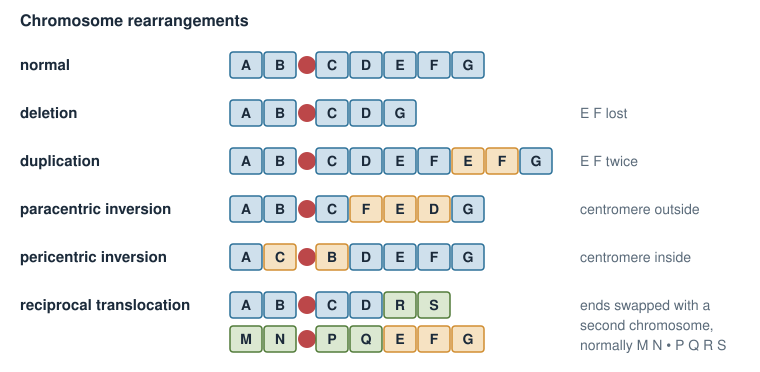
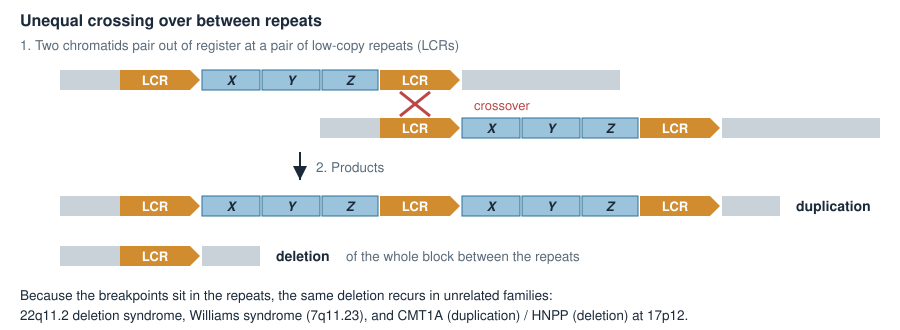
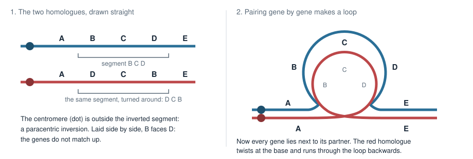
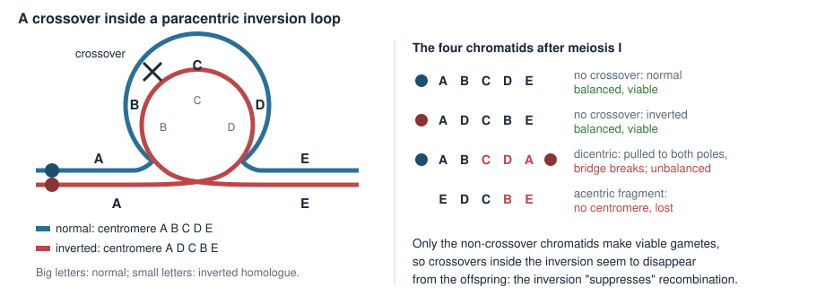
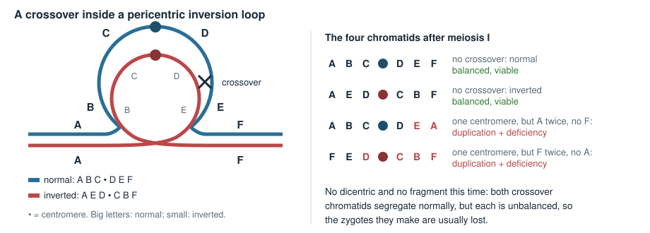
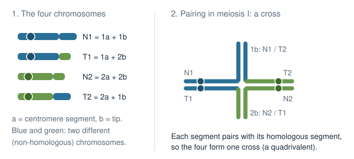

Part 5: Chromosomes in detail. When the structure or the number of chromosomes changes
Basic and molecular genetics (5MO104)
About this lecture
The previous lecture built a normal chromosome: one centromere, two telomeres, a fixed band pattern. This one is about what happens when structure or number goes wrong, and why the consequences show up in the next generation.
Deletions and duplications: dosage changes; recurrent ones caused by repeats; deletion mapping.
Inversions: no DNA lost, yet crossovers inside them give unbalanced gametes. We work out the products step by step.
Translocations: reciprocal and Robertsonian; how the carrier’s chromosomes segregate, counted segment by segment; the Philadelphia chromosome.
Aneuploidy: nondisjunction in meiosis I and II; finding the parent and the division with DNA markers; trisomy 21 and the maternal age effect.
Polyploidy: crops with whole extra genomes, and why triploids are sterile.
Book: Hartwell, Genetics: From Genes to Genomes, the chapter on chromosomal rearrangements and changes in chromosome number.
Four kinds of rearrangement

A rearrangement starts with double-strand breaks that are rejoined the wrong way, or with recombination between repeats at the wrong place. Balanced rearrangements (inversions, reciprocal translocations) keep every gene, just in a new order; unbalanced ones (deletions, duplications) change the amount.
Reading a rearrangement karyotype
The notation from the last lecture: type(chromosome)(breakpoints). The breakpoints tell you what kind of change it is.
Karyotype
Read it as
Kind
46,XX,del(4)(p16.1)
chromosome 4 is missing everything from 4p16.1 to the end of 4p
terminal deletion, unbalanced
46,XY,del(7)(q11.23q11.23)
a piece inside 7q11.23 is missing
interstitial deletion, unbalanced
46,XX,inv(1)(q21q32)
both breakpoints on q: the centromere is outside
paracentric inversion, balanced
46,XY,inv(5)(p13q31)
one breakpoint on p, one on q: the centromere is inside
pericentric inversion, balanced
46,XX,t(11;22)(q23;q11.2)
11q23→11qter and 22q11.2→22qter have swapped
reciprocal translocation, balanced
45,XY,rob(14;21)(q10;q10)
14q and 21q joined at the centromere; 45 chromosomes
Robertsonian, balanced
Rule of thumb: an inversion with both breakpoints on the same arm letter is paracentric; with a p and a q it is pericentric.
Recurrent rearrangements come from repeats

Non-allelic homologous recombination (NAHR): crossing over between two similar low-copy repeats that are not at the same position. It gives a deletion and a reciprocal duplication of exactly the segment between the repeats.
Deletions
A heterozygote for a deletion has only one copy of the genes in the deleted segment.
Haploinsufficiency: for some genes, one copy is not enough. Large deletions are usually harmful; homozygous deletions are usually lethal.
Pseudodominance: a recessive allele on the normal homologue is expressed, because the deletion uncovers it.
In meiosis, the normal homologue forms a deletion loop where it has no partner.
Human deletion syndrome
Region
Typical size
Key gene(s)
Cri-du-chat
5p15.2 → 5pter
varies
several
22q11.2 deletion (DiGeorge)
22q11.21
≈ 2.5–3 Mb
TBX1 (heart, face)
Williams syndrome
7q11.23
≈ 1.5–1.8 Mb
ELN (aortic stenosis)
Deletion mapping, step by step
Drosophila larval salivary glands have giant polytene chromosomes, about a thousand copies side by side, with a band pattern visible in a light microscope. A deletion shows up as missing bands.
The test. Cross a fly homozygous for recessive m with a fly carrying a deletion (Df). If some offspring are mutant, the deletion uncoversm: m lies inside it.
bands removed
uncovers x?
uncovers y?
Df1
1–3
yes
no
Df2
3–5
yes
yes
Df3
5–6
no
no
x: inside Df1andDf2, so in their overlap: band 3.
y: inside Df2 but notDf1 or Df3: bands 3–5 minus 3 and 5: band 4.
Drosophila polytene chromosomes (phase contrast). Inset b: the dark bands up close.
Duplications
Dosage: three copies of a gene instead of two can change the phenotype. DrosophilaBar eye is a tandem duplication; flies with the segment three times on one chromosome (double-Bar) have even smaller eyes. Human CMT1A is a duplication of PMP22.
In meiosis, the duplicated segment forms a duplication loop, and the repeat makes further unequal crossing over possible: duplications beget duplications.
Evolution: a duplicated gene is free to change. One copy keeps the old job, the other can gain a new one. Gene families arose like this, for example the α- and β-globin genes, and the red and green opsin genes on the X.
Duplications are usually less harmful than deletions of the same size: having a little too much is better tolerated than too little.
Inversions
An inversion loses nothing: an inversion homozygote, or a heterozygote, usually has a normal phenotype. Exceptions: a breakpoint inside a gene, or a gene moved next to heterochromatin (position-effect variegation, previous lecture).
Paracentric
Pericentric
Centromere
outside the inverted segment
inside it
Band pattern
changes within one arm
can change the arm ratio
Crossover in the loop gives
a dicentric + an acentric
two chromosomes with a duplication and a deficiency
The trouble starts in a heterozygote at meiosis: the next four slides build it up step by step.
A common harmless human variant is the pericentric inversion of chromosome 9, inv(9)(p12q13), found in about 1–3% of people.
Step 1: pairing makes a loop

Homologues pair gene by gene. Where one of them has a segment the other way round, the only way to bring B next to B and D next to D is for one homologue to form an inversion loop. (In a cell the loop can be made by either homologue.)
Step 2: one crossover in a paracentric loop

The crossover chromatids become a dicentric (A B C D A, with a centromere at each end) and an acentric fragment (E D C B E).
At anaphase I the dicentric is pulled to both poles and breaks; the acentric has no kinetochore and is lost.
How to work out the products: a recipe
A crossover between genes X and Y joins two pieces:
Write both chromatids, with the centromere: normal • A B C D E, inverted • A D C B E.
Find the crossover in both: here between B and C. In the inverted chromatid, B and C are neighbours too (…C B…).
Product 1 = the normal piece that contains B + the inverted piece that contains C.
normal piece with B: • A B; inverted piece with C, read away from B: C D A •
joined: • A B C D A •: two centromeres, A twice, no E: a dicentric.
Product 2 = the normal piece that contains C + the inverted piece that contains B.
normal piece with C: C D E; inverted piece with B: B E
join the crossover ends (C meets B): E D C B E: no centromere: an acentric.
Check: count every letter and every centromere across the two products. Together they have exactly what the two parental chromatids had.
Step 3: one crossover in a pericentric loop

Same recipe, crossover between D and E. Normal piece with D (A B C • D) + inverted piece with E (E A) = A B C • D E A. Normal piece with E (E F) + inverted piece with D (D • C B F), joined where E meets D = F E D • C B F.
What inversions do to recombination
A worked example, with round numbers to show the logic:
In an inversion heterozygote, suppose 40% of meioses have one crossover inside the loop.
Each such meiosis gives 2 of 4 unbalanced products (the crossover chromatids).
Unbalanced gametes: 0.40 × ½ = 20%. Viable gametes are all non-crossover chromatids.
Consequences:
Among the surviving offspring, no recombinants for genes inside the inversion: recombination looks suppressed. Crossing over happens; its products die.
Reduced fertility in heterozygotes, especially plants and males.
Balancer chromosomes in Drosophila use this: several overlapping inversions, a dominant visible marker and a recessive lethal keep a mutation on the other homologue intact for generations.
Reciprocal translocations: step 1, pairing

Name the segments: chromosome 1 = 1a (with the centromere) + 1b (the tip); chromosome 2 = 2a + 2b. The carrier has N1 = 1a·1b, N2 = 2a·2b, T1 = 1a·2b and T2 = 2a·1b: every segment exactly twice. A balanced carrier is usually healthy.
Step 2: two of the four go to each pole
The four centromeres are shared out two and two. Alternate: N1 + N2 / T1 + T2. Adjacent-1: homologous centromeres go apart, N1 + T2 / N2 + T1. Adjacent-2: homologous centromeres go together, N1 + T1 / N2 + T2.
Step 3: count the segments
A gamete is balanced if it has every segment exactly once.
Mode
Gamete
1a
1b
2a
2b
Result
alternate
N1 + N2
1
1
1
1
balanced, normal
alternate
T1 + T2
1
1
1
1
balanced, carrier
adjacent-1
N1 + T2
1
2
1
0
dup 1b, def 2b
adjacent-1
N2 + T1
1
0
1
2
dup 2b, def 1b
adjacent-2
N1 + T1
2
1
0
1
dup 1a, def 2a
adjacent-2
N2 + T2
0
1
2
1
dup 2a, def 1a
Only alternate gametes are balanced, and half of those carry the translocation on.
Adjacent-1 products duplicate and lose tips (often small); adjacent-2 products duplicate and lose the large centromeric segments, so they are almost always lethal.
Robertsonian translocations
Two acrocentric chromosomes (13, 14, 15, 21, 22) fuse at or near their centromeres. The long arms survive as one chromosome; the tiny short arms (repeats and rDNA) are lost without harm.
A carrier has 45 chromosomes, e.g. 45,XX,rob(14;21), and is healthy. About 1 in 1000 people carry a Robertsonian translocation.
Their gametes, from a trivalent (14, 21, rob):
Gamete
Zygote with a normal gamete
Outcome
14 + 21
46, normal
healthy
rob(14;21)
45, balanced carrier
healthy
rob(14;21) + 21
46, but three copies of 21q
translocation Down syndrome
14 alone
monosomy 21
lethal
rob(14;21) + 14
trisomy 14
lethal
21 alone
monosomy 14
lethal
About 4% of Down syndrome is translocation Down syndrome, and it can recur in a family.
The Philadelphia chromosome
Chronic myeloid leukaemia (CML): in most patients, the leukaemic cells carry t(9;22)(q34;q11).
The small derivative chromosome 22, der(22), is the Philadelphia chromosome (Nowell and Hungerford, 1960; shown to be a translocation by Janet Rowley in 1973).
The breakpoints fall inside two genes: BCR on 22q11 and ABL1 on 9q34. The joint makes a fusion gene, BCR::ABL1.
The fusion protein is a tyrosine kinase that is always on, and drives the cells to divide.
Imatinib (2001) blocks the kinase: one of the first drugs designed against the product of a specific mutation.
This is a somatic rearrangement in blood stem cells: it is not inherited.
2 × n + 1 (one copy from each grandparent), 2 × n − 1
Meiosis II
the sister chromatids in one cell
1 × n + 1 (two identical copies), 1 × n − 1, 2 × n
A trisomic zygote from an MI error has two different homologues from that parent; one from an MII error has two copies of the same homologue (apart from crossovers). DNA markers near the centromere tell which division failed.
Try it: nondisjunction in meiosis I and II
Which parent, which division? A worked example
A short tandem repeat marker near the centromere of chromosome 21. Each number is an allele (repeat count).
Family
Mother
Father
Child
Reasoning
1
5, 8
6, 9
5, 8, 9
9 is from the father; 5 and 8 are both from the mother: two different maternal homologues → maternal MI
2
5, 8
6, 9
8, 8, 6
6 from the father; 8, 8 from the mother: two copies of one homologue → maternal MII
3
5, 8
5, 9
5, 8, 9
8 must be maternal, 9 paternal, but 5 could be from either: not informative
The method. (1) Assign each allele in the child to a parent. (2) The parent with two alleles in the child made the disomic gamete. (3) Different alleles = MI, same allele twice = MII. (4) If the parents share alleles, use more markers.
Human aneuploidies
Karyotype
Name
Approximate frequency
Notes
47,+21
Down syndrome
≈ 1 in 700 births without screening
the most common viable autosomal trisomy
47,+18
Edwards syndrome
≈ 1 in 5000 births
most die in the first year
47,+13
Patau syndrome
≈ 1 in 10 000 births
most die in the first year
45,X
Turner syndrome
≈ 1 in 2500 girls
≈ 99% of 45,X conceptions miscarry
47,XXY
Klinefelter syndrome
≈ 1 in 600 boys
tall, infertile; often undiagnosed
47,XYY
≈ 1 in 1000 boys
usually few signs
47,XXX
triple X
≈ 1 in 1000 girls
usually few signs
No autosomal monosomy survives to birth, and of the autosomal trisomies only 13, 18 and 21 (the chromosomes with the fewest genes) do.
About half of first-trimester miscarriages are chromosomally abnormal; trisomy 16 is the most common, and is never born alive.
Sex-chromosome aneuploidies are tolerated because extra X chromosomes are inactivated, and the Y carries few genes.
Sex-chromosome aneuploidy: whose error?
The same reasoning, using what each parent can give:
Karyotype
Possible origins
What we can say
47,XYY
sperm YY
only the father has a Y, and two Ys are sister chromatids: paternal meiosis II, always
47,XXY
sperm XY (father, MI), or egg XX (mother, MI or MII)
either parent; X-linked markers decide. Roughly half of cases are paternal
47,XXX
egg XX, or sperm XX
mostly maternal
45,X
sperm or egg with no sex chromosome, or loss after fertilisation
the single X is usually the mother’s: the paternal sex chromosome is the one lost
A father’s XY sperm can only come from meiosis I, because X and Y are homologues that should separate there.
The maternal age effect
The risk of trisomy 21 is ≈ 1 in 1000 pregnancies for mothers aged 20–29 and ≈ 1 in 47 at 40–44. Monosomy X shows no such rise.
Polyploidy
Polyploids have three or more complete sets: triploid (3n), tetraploid (4n) and so on. Rare in animals, common in plants: much of our food is polyploid.
Crop
Ploidy
Origin
Bread wheat
6x = 42 (AABBDD)
allopolyploid: three ancestral species
Cotton, rapeseed
4x
allopolyploid of two species
Potato
4x = 48
autopolyploid: doubled sets of one species
Cultivated strawberry
8x = 56
allopolyploid
Banana (Cavendish), seedless watermelon
3x
sterile triploids, seedless
Autopolyploid: extra sets from the same species. Allopolyploid: sets from two or more species, after hybridisation and chromosome doubling.
Polyploids are often bigger (larger cells), and allopolyploids are fertile because each chromosome has a partner from its own species.
Why triploids are sterile
In a triploid, each chromosome has three homologues. At meiosis I, a trivalent sends 2 copies to one pole and 1 to the other, at random.
For each chromosome type, the gamete gets 1 or 2 copies with probability ½ each. With x chromosome types, a gamete is balanced (euploid: all 1 or all 2) with probability
two acrocentrics fuse; carrier has 45 chromosomes; can give translocation Down syndrome
Philadelphia chromosome
t(9;22) in CML; BCR::ABL1 fusion kinase; somatic
Nondisjunction
MI: n + 1 gametes carry both homologues; MII: two copies of one; centromere markers tell which
Trisomy 21
≈ 90% maternal, mostly MI; risk rises steeply with maternal age
Sex-chromosome aneuploidy
45,X; 47,XXY; 47,XYY (always paternal MII); 47,XXX; tolerated thanks to X inactivation
Polyploidy
auto- and allopolyploids; triploids sterile: P(balanced) = 2 · (½)x
Where this leads
Next: Bacterial genetics (recap). A very different kind of chromosome: one circle, no meiosis, but genes moved between cells by conjugation, transduction and transformation.
Organelle inheritance. Mitochondria have their own chromosome, inherited only through the egg, and their own kind of dosage: heteroplasmy.
Part 6: Eukaryotic regulation. X inactivation, the dosage compensation that makes sex-chromosome aneuploidy survivable.
Part 7: Cancer genetics. Fusion genes like BCR::ABL1 and the loss of chromosome segments in tumours.
Ethics. Prenatal screening for trisomies raises its own questions.